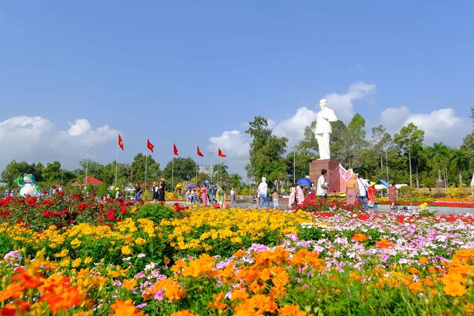

local_florist
Làng hoa Sa Đéc
Làng hoa Sa Đéc không chỉ là vựa hoa kiểng lớn nhất miền Tây Nam Bộ mà còn là một bức tranh nghệ thuật sống động trải dài ven bờ sông Tiền. Điểm độc đáo nhất ở đây là kỹ thuật trồng hoa "trên giàn", thích nghi hoàn hảo với mùa nước nổi.
Vào những ngày cận Tết, hàng ngàn luống hoa vươn cao trên mặt nước đua nhau khoe sắc. Du khách có thể chèo xuồng len lỏi giữa các giàn hoa, cảm nhận hương thơm thoang thoảng và lưu lại những khung hình rực rỡ nhất của vùng Đất Sen Hồng.